가구제작기능사 (2004-10-10 기출문제)
1과목: 임의 구분
1. 축척의 눈금을 제도용지에 옮기거나 도면위의 선을 등분할때 사용되는 제도 용구는?
- 비임 컴퍼스
- 디바이더
- 삼각자
- 먹줄펜
(정답률: 91%)

2. 제도 문자의 크기를 나타내는 것은?
- 문자의 폭
- 문자의 높이
- 문자의 굵기
- 문자의 간격
(정답률: 78%)
3. 제도용지 전지를 그림과 같이 등분하였을 때 빗금친 부분의 크기는?
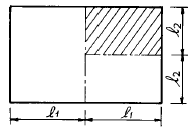
- A1
- A2
- A3
- A4
(정답률: 74%)
4. 아래 그림에서 각은 얼마인가?
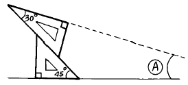
- 15°
- 30°
- 45°
- 60°
(정답률: 78%)
5. 도면이 갖추어야 할 조건 중 관계가 없는 것은?
- 간단하고 정확하게 표현한다.
- 쉽게 이해할 수 있도록 한다.
- 모든 도면의 축척은 통일시킨다.
- 일정한 규칙, 기호에 알맞게 한다.
(정답률: 93%)
6. 다음 보기의 그림에 맞는 정면도는?
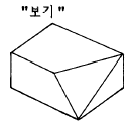
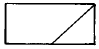
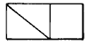
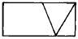
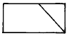
(정답률: 85%)
7. 목재단면의 표시기호가 아닌 것은?
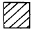
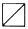
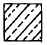
(정답률: 80%)
8. 신발장의 설계요점 내용 중 잘못된 것은?
- 수납 및 청소가 편리한 구조로 한다.
- 선반판은 신발의 크기에 따라 올리고 내리도록 한다.
- 신발의 치수를 기준으로 크기를 결정하는 것이 좋다.
- 문은 면적을 작게 차지하기 위하여 미서기문보다 여닫이문으로 한다.
(정답률: 84%)
9. 좌우가 같은 형태를 이루지 않으나 시각적으로 균형을 이루는 형태를 무엇이라 하는가?
- 대칭 균형
- 비례 균형
- 방사 균형
- 비대칭 균형
(정답률: 78%)
10. 축척자(삼각 스케일)에 대한 설명으로 틀린 것은?
- 임의의 축척으로 도면을 작성할 때 사용된다.
- 1/100, 1/200, 1/300, 1/400, 1/500, 1/600의 6가지 축척이 있다.
- 1/10, 1/20, 1/30 등의 도면을 작도할 때도 사용된다.
- 길이를 재거나 길이를 줄여 그릴 때 사용한다.
(정답률: 61%)
11. 정투상법 중 3각법의 표현은 기준이 눈으로부터 어떤 순서로 위치하는가?
- 화면 - 눈 - 물체
- 눈 - 물체 - 화면
- 눈 - 화면 - 물체
- 물체 - 눈 - 화면
(정답률: 74%)
12. 건물의 외관을 나타내는 입면도 중 정면도를 가장 잘 표현한 것은?
- 개구부가 많이 있는 측
- 복잡한 입면이 있는 측
- 현관이 있는 측
- 도로에 면한 측
(정답률: 87%)
13. 다음 중 2소점 투시도에서 소점이 아주 낮은 경우에 나타날 수 있는 현상은?
- 조감도에 가깝게 보인다.
- 건물이 길게 보인다.
- 건물이 작게 보인다.
- 건물이 웅장해 보인다.
(정답률: 67%)
14. 치수 기입법 중 틀린 것은?
- 도면의 위로부터 아래로, 왼쪽에서 오른쪽으로 기입한다.
- 중복을 피하고 치수선에 평행하게 기입한다.
- 계산하지 않아도 알기 쉽게 기입한다.
- 치수선 위의 중앙부분에 기입한다.
(정답률: 74%)
15. 루우트비의 직사각형에 의한 구성비를 무엇이라 하는가?
- 정적균제
- 동적균제
- 미적균제
- 통일균제
(정답률: 64%)
16. 제도판의 재료로서 가장 좋은 것은?
- 백송
- 합판
- 나왕
- 전나무
(정답률: 62%)
17. 목질부가 굳고 함수율도 적으므로 노목이 되면 먼저 부패되는 곳은?
- 변재
- 심재
- 나이테
- 표피
(정답률: 69%)
18. 목재의 제재품 건조법 중 틀린 것은?
- 자연 건조법에 의할 때에는 그늘에서 통풍으로만 장기간 건조시킨다.
- 자연 건조법에서는 직사광선 등을 피해야 한다.
- 인공 건조법은 자연 건조법보다 건조일이 오래걸린다.
- 인공 건조법은 먼저 수액을 빼고 인공적으로 가열하여 건조시킨다.
(정답률: 90%)
19. 목재의 방부, 방충법 중 약제 처리에 속하지 않는 것은?
- 침지
- 코울타르
- 크레오소오트
- PCP(pentachloro phenol)
(정답률: 69%)
20. 수목줄기에 직각 방향으로 배치되어 있으며 양분과 수분의 통로가 되는 세포는?
- 나무섬유
- 물관(도관)
- 수선
- 수지관
(정답률: 58%)
2과목: 임의 구분
21. 목재의 색채에 관한 기술중 옳지 않은 것은?
- 목재의 색은 세포막에 함유되어 있는 화학 물질에 의한 것이다.
- 목재의 색소는 목질의 부패를 막는 효과가 있다.
- 목재의 자연 색채가 아름다운 느낌이 있는 것은 공예상 장식적인 부분 세공 가구 등에 이용된다.
- 목재의 무늬가 아름답게 나타나 있는 것은 착색제를 사용하는 것이 좋다.
(정답률: 76%)
22. 목재의 인공건조방법이 아닌 것은?
- 증기법
- 진공법
- 열기법
- 압연법
(정답률: 82%)
23. 가구제작에 많이 이용되는 합판의 특성에 관한 기술로 옳지 않은 것은?
- 뒤틀림이 없다.
- 곡면판을 쉽게 만들 수 있다.
- 방향에 따른 강도차가 적다.
- 팽창수축이 크다.
(정답률: 84%)
24. 강철과 비슷한 강도를 내며 비중은 강철의1/3 정도로 가벼우므로 항공기, 선박, 차량 등의 구조재에 많이 이용되는 수지는?
- 불포화 폴리에스테르(polyester)수지
- 폴리에틸렌(polyetylene)수지
- 폴리스티롤(polystyrol)수지
- 플루오르(fluor)수지
(정답률: 68%)
25. 양여닫이 장농문짝에 쓰이는 철물로 부적당한 것은?
- 정첩
- 면붙임 자물쇠
- 오르내리 꽂이쇠
- 물림쇠(헛자물쇠)
(정답률: 62%)
26. 강당, 집회장, 극장 등의 음향조절용으로 쓰거나 일반건물의 벽 수장재로 주로 이용되는 것은?
- 코펜하겐 리브
- 플로어링 보드
- 플로어링 블록
- 천연무늬 화장합판
(정답률: 79%)
27. 목재의 단점을 보완하는 방법으로 틀린 것은?
- 용도에 맞는 건조된 것을 사용한다.
- 수령은 장목기의 나무를 선택한다.
- 도장을 알맞게 한다.
- 봄이나 여름에 벌채한 것을 사용한다.
(정답률: 85%)
28. 다음은 황동의 용도로서 적당치 않은 것은?
- 미술공예품
- 논스립
- 코너비드
- 장식철물
(정답률: 64%)
29. 알루미늄에 대한 설명으로 적당치 않은 것은?
- 비중은 철의 1/3정도이다.
- 내식성이 우수하며 가공성도 양호하다.
- 용해주조도가 좋으며 내화성이 우수하다.
- 건축디자인상으로 우수한 재료이다.
(정답률: 58%)
30. 다음 경도의 설명 중 잘못된 것은?
- 목재는 마구리면, 곧은결, 무늬결 순으로 경도가 크다.
- 춘재부 보다 추재부의 경도가 크다.
- 비중이 크고 수지의 함유량이 적을수록 경도가 크다.
- 함유수분이 적을수록 경도가 크다.
(정답률: 46%)
31. 집성목재의 설명으로 옳지 않은 것은?
- 강도를 자유롭게 조절할 수 있다.
- 응력에 따라 단면을 얻을 수 있다.
- 필요에 따라 굽은용재를 만들 수 있다.
- 길고 단면이 큰 부재를 만들기 곤란하다.
(정답률: 79%)
32. 목재의 주요구성 세포 중 목세포의 비율로서 맞는 것은?
- 2∼ 5%
- 5∼ 15%
- 20∼ 30%
- 50∼ 70%
(정답률: 55%)
33. 밤나무, 벗나무, 오동나무 등은 어느과에 속하는 식물인가?
- 송백과 식물
- 쌍떡잎 식물
- 외떡잎 식물
- 편백과 식물
(정답률: 82%)
34. 마디가 길고, 강인하고, 가늘게 자르기에 좋다. 육질이 얇은 편이어서 가공하는 폭이 넓어 통, 가구, 완구, 자, 부채 등 다양한 공예품에 쓰이는 대나무의 종류는?
- 운문죽
- 당죽
- 포대죽
- 함죽
(정답률: 71%)
35. 좋은 아교를 선별하는 방법이 아닌 것은?
- 반 투명체이고 황색을 띤 백색이어야 한다.
- 잘린 단면이 불규칙한 것이어야 한다.
- 혀에 닿으면 짠맛, 신맛이 나지 않아야 한다.
- 물에 넣었을 때 잘 녹는 것이 좋다.
(정답률: 71%)
36. 끌공구 날갈기에서 옳지 않은 것은?
- 날끌 양쪽 모서리 양각을 예리하게 간다.
- 밀어넣기(다듬질)끌은 마무리갈기 최후를 뒷날 갈기로 그친다.
- 폭이 좁은 끌은 날끝이 기울기 쉬우므로 균일하게 힘을 주어 연마한다.
- 끌은 폭이 좁으므로 힘을 가하는 것 보다 앞날 각을 바르게 유지하도록 한다.
(정답률: 70%)
37. 구멍뚫기, 내외부의 면접기, 조각, 홈파기 등에 광범위하게 사용되는 장비는?
- 각끌기
- 루우터
- 둥근톱기계
- 띠톱기계
(정답률: 78%)
38. 쪽매방법 중 가장 강도가 큰 것은?
- 빗쪽매
- 반턱쪽매
- 제혀쪽매
- 딴혀쪽매
(정답률: 80%)
39. 다음 그림과 같은 가구 문짝에서 양판(A)을 넣고 조립할 때의 설명을 가장 옳게 한 것은?
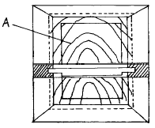
- 사방 홈에 접착제를 넣어 조립한다.
- 사방 홈에 접착제를 바르고 뒤쪽에서 숨은 못치기를 한다.
- 홈에 접착제를 바르지 말고 양판이 움직임이 있게 한다.
- 상, 하 부분만 접착제를 바르고 좌, 우에는 바르지 않고 신축성에 대비한다.
(정답률: 67%)
40. 이음과 맞춤에서의 유의사항 중 옳지 않은 것은?
- 재료는 가급적 적게 깎아낸다.
- 공작이 간단한 것을 쓰며 모양에 치중하지 않는다.
- 이음, 맞춤은 응력이 집중하는 곳에 설치해야 효과가 높다.
- 이음, 맞춤의 단면은 응력의 방향에 직각으로 한다.
(정답률: 71%)
3과목: 임의 구분
41. 장부 맞춤 작업공정 중 옳지 않은 기술은?
- 장부 어깨를 먼저 자르고 장부 켜기를 나중에 한다.
- 장부의 끝은 면을 약간 접어야 구멍에 잘 들어간다.
- 작업순서는 구멍파기, 장부만들기, 조립의 순서로 한다.
- 장부 두께는 부재의 1/3 정도로 한다.
(정답률: 77%)
42. 옆판을 천판에 접착시키는 방법 중 가장 좋은 것은?
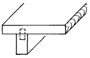
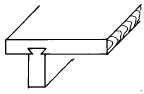
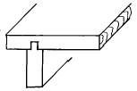
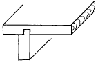
(정답률: 75%)
43. 다음 중 연귀맞춤 방법을 이용하지 않는 것은?
- 상자 만들기
- 사진틀 만들기
- 의자의 안장짜기
- 책상다리 만들기
(정답률: 81%)
44. 그림과 같은 이음법의 명칭은?
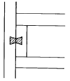
- 내민이음
- 반턱이음
- 나비장이음
- 덧댄이음
(정답률: 92%)
45. 그림과 같은 주먹장 만들기에서 물매정도 A : B의 비율로 적당한 것은?
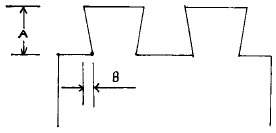
- 4 : 1
- 5 : 1
- 6 : 1
- 7 : 1
(정답률: 65%)
46. 대패 어미날 앞날의 각은?
- 10 ∼ 20°
- 25 ∼ 30°
- 35 ∼ 40°
- 45 ∼ 50°
(정답률: 72%)
47. 가장 견고한 쪽매 맞춤은?
- 맞댄 쪽매
- 빗 쪽매
- 반턱 쪽매
- 주먹장 쪽매
(정답률: 82%)
48. 반턱통맞춤의 변형으로 정밀을 요구하는 맞춤으로 맞추었을 때 틈이 보이지 않게 하는 맞춤은?
- 장부 통맞춤
- 주먹장 통맞춤
- 남김 주먹장 통맞춤
- 통맞춤
(정답률: 46%)
49. 장부맞춤을 하는 순서로 옳은 것은?
- 장부만들기 - 마름질 - 장부구멍파기 - 조립
- 장부구멍파기 - 장부만들기 - 마름질 - 조립
- 마름질 - 장부구멍파기 - 장부만들기 - 조립
- 마름질 - 장부만들기 - 장부구멍파기 - 조립
(정답률: 65%)
50. 부재의 마구리를 보통 1/2로 깍아서 모서리와 모서리를 맞추는 맞춤법은?
- 연귀맞춤
- 사개맞춤
- 쪽매맞춤
- 꽂음촉맞춤
(정답률: 76%)
51. 각끌기계에서 장부구멍의 폭을 조정하는 핸들은?
- 승강핸들
- 좌우 이동핸들
- 전후 이동핸들
- 주축 오르내림핸들
(정답률: 56%)
52. 규격이 1200㎜× 2400㎜인 합판1장을 가지고 290㎜× 450㎜ 규격의 판 몇장을 만들 수 있는가?
- 10장
- 15장
- 20장
- 30장
(정답률: 76%)
53. 접착제에 의한 접합시 이상적인 접착층의 두께는?
- 0.02㎜
- 0.06㎜
- 0.1㎜
- 0.2㎜
(정답률: 75%)
54. 작은부재를 이용하여 넓은부재를 얻는 방법은?
- 쪽매맞춤
- 반턱맞춤
- 통맞춤
- 꽂음촉맞춤
(정답률: 61%)
55. 다음 중 연귀자의 용도가 알맞은 것은 어느 것인가?
- 물체의 지름, 길이 등을 측정하는 데 사용
- 부재에 45° 선을 그을 때 사용
- 공작물의 외경 측정에 사용
- 장부구멍 선을 긋는 데 사용
(정답률: 75%)
56. 다음 그림의 접합에 대한 명칭은 어느 것인가?
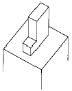
- 턱솔 장부맞춤
- 턱 장부
- 반턱 맞춤
- 주먹 장부
(정답률: 62%)
57. 대체로 가공량이 많으므로 천천히 작업하며 특히 부재를 댈 때와 끝날 때 주의하여 가공하여야 하는 기계는?
- 둥근톱 기계
- 띠톱 기계
- 면취기
- 실톱 기계
(정답률: 58%)
58. 톱질 작업시 톱질이 잘 되지 않았을 때 제일 먼저 점검하는 일은?
- 톱날 어김
- 톱날 세우기
- 톱몸 바로잡기
- 톱니 고르기
(정답률: 66%)
59. 그무개 사용법으로 옳지 않은 것은?
- 그무개 날과 기준대는 직각이 되어야 한다.
- 그무개 날은 안쪽으로 경사지게 연마한다.
- 가공선을 정확히 긋는다.
- 그무개 날은 가공하지 않아도 된다.
(정답률: 85%)
60. 가구에서 착색이 자유롭고 견고하며 내열성 전기 절연성이 우수하여 실내장식 및 가구재료로 사용되는 합성수지는?
- 멜라민수지
- 푸란수지
- 알킷수지
- 실리콘수지
(정답률: 72%)